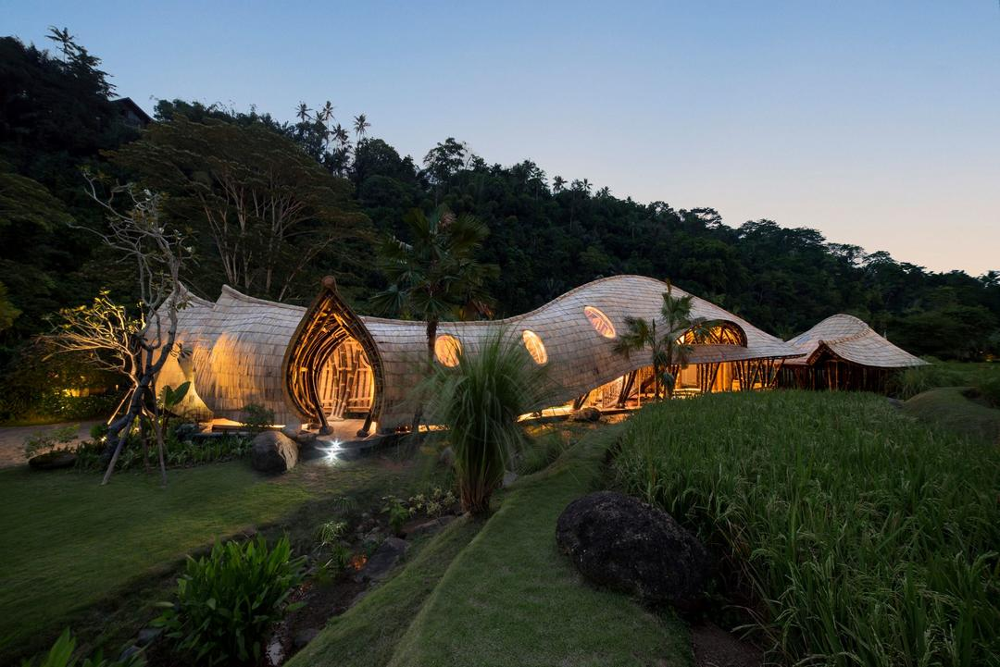

Многие путешественники ценят комфорт и, планируя свою поездку, немало времени уделяют поиску высококлассных отелей. Благодаря огромному разнообразию вариантов, часто бывает трудно определиться с выбором. Хорошие апартаменты должны отвечать ряду критериев, которые так важны для комфортного отдыха: кто-то в первую очередь обращает внимание на дизайн интерьера, кто-то — на доступность определенных услуг и развлечений на территории гостиницы, а кто-то — на месторасположение и красоту окружающих пейзажей.
Если вы хотите по-настоящему отдохнуть душой и телом, то идеальным местом для этого станет пятизвездочный отель Mandapa, a Ritz-Carlton Reserve, окруженный живописными рисовыми полями и холмами. Его сравнивают с маленьким храмом, в котором каждый сможет уединиться, расслабиться и отыскать свое душевное равновесие. В распоряжении гостей — просторные виллы с одной, двумя и тремя спальнями площадью от 430 до 2000 м², террасами с потрясающими видами, бассейнами и душевыми кабинами на открытом воздухе. Кроме того, в отеле доступны услуги дворецкого, занятия йогой на специально обустроенных площадках, комплексные оздоровительные программы, спа-процедуры, экскурсии и развлекательные мероприятия. В ресторане отеля для отдыхающих готовят разные индонезийские деликатесы и блюда интернациональной кухни.
Отель Gardena Grodnerhof Oltre Torrente расположился в итальянской коммуне Ортизея, в окружении кинематографичных пейзажей Доломитовых Альп. Он является частью престижной международной сети Relais & Châteaux. Гостям предлагают поселиться в одном из 54 просторных, элегантных номеров, полностью обустроенных для комфортного отдыха. Большое внимание здесь уделяется оздоровительным программам — в отеле можно пройти множество разных спа-процедур, заняться фитнесом, посетить сауну, тренажерный зал и крытый бассейн. Многие гости отмечают высочайший уровень обслуживания. В ресторане гостиницы подают изысканные лакомства разных кухонь мира, которые не оставят равнодушным ни одного гурмана.

Особого внимания в рейтинге отелей заслуживает The Hari — настоящий рай для ценителей элегантности, стиля и комфорта. В нескольких минутах ходьбы от него находятся знаковые городские достопримечательности — Гайд-парк, Букингемский дворец, Королевский Альберт-холл и другие. Гостям предлагается 85 дизайнерских номеров (в их числе 14 роскошных люксов) с мраморными ванными комнатами, предметами современного искусства и удобной мебелью. Кроме того, в распоряжении отдыхающих находятся бар и ресторан, живописная садовая терраса, круглосуточный фитнес-центр, парковка и площадки для проведения праздничных мероприятий.
| |Mandapa, a Ritz-Carlton Reserve| | |Hotel Gardena Grodnerhof Oltre Torrente| | |The Hari| |
|---|---|---|
| Free | Free | Free |